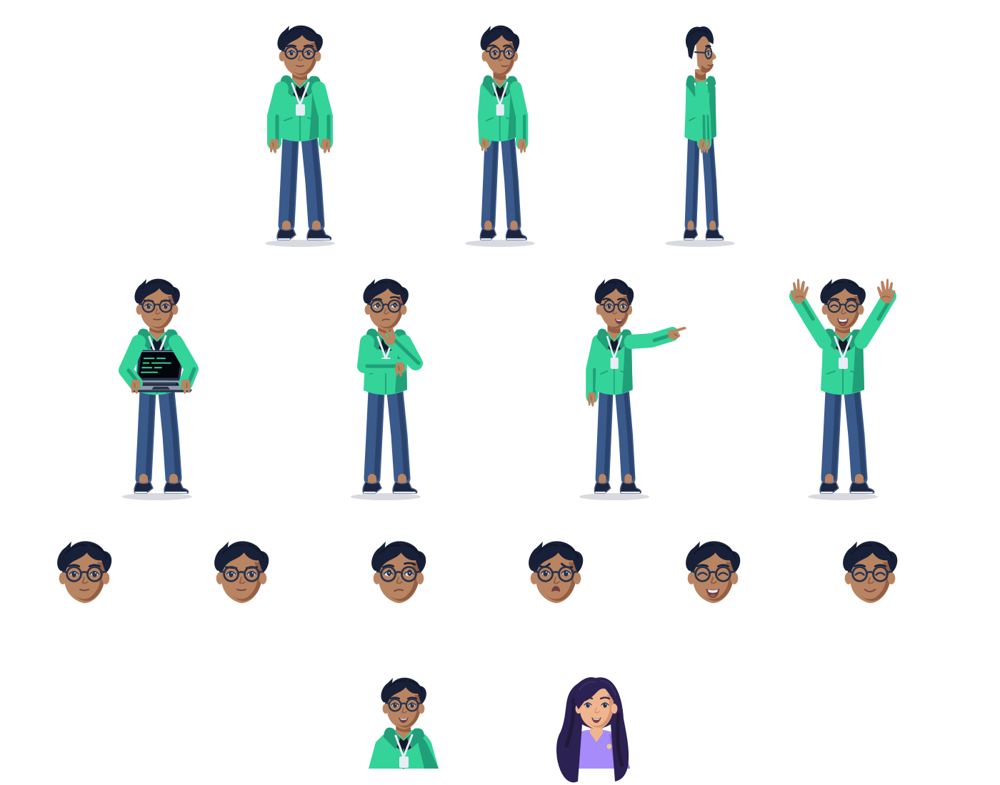
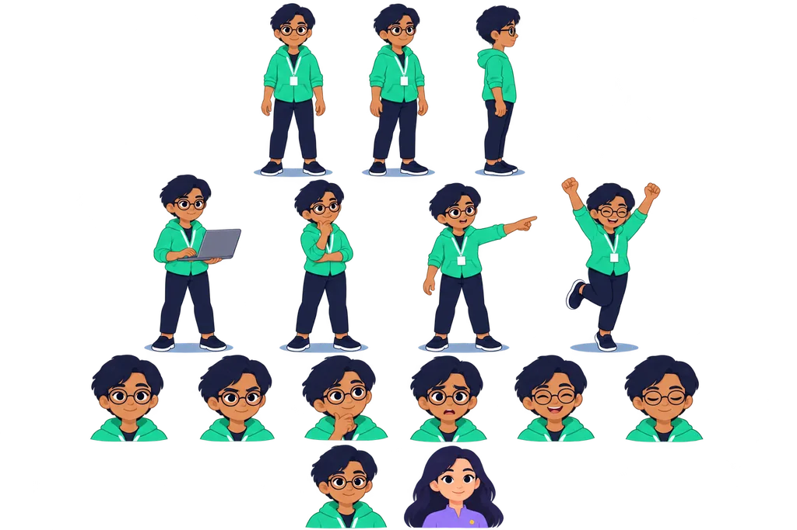

The engineer · source art
The reference is a raster image. The separate SVG sheet contains editable vector groups. View Maya's sheet
Editable SVG sheet
Open SVG
Small-size pose check
Speech-bubble portraits
Generated transparent reference
